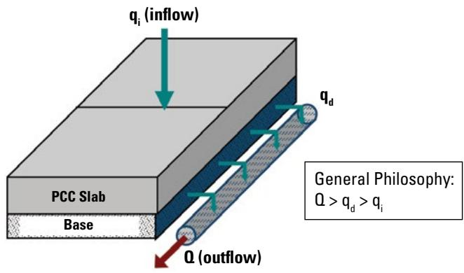
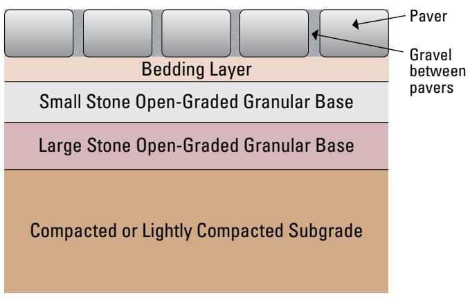
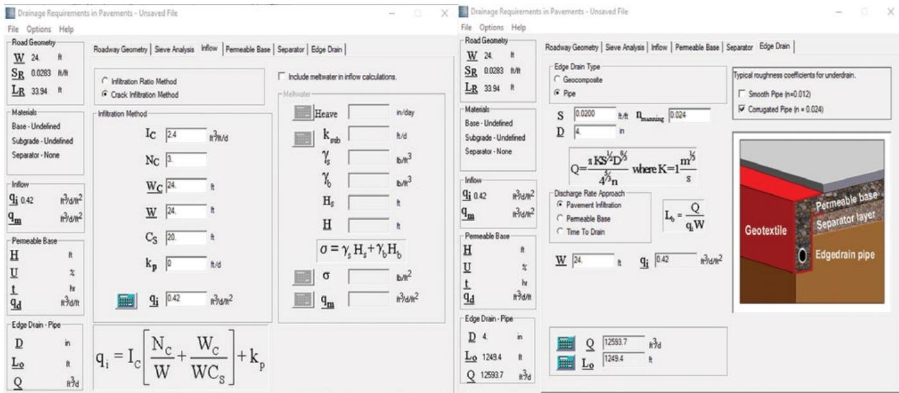
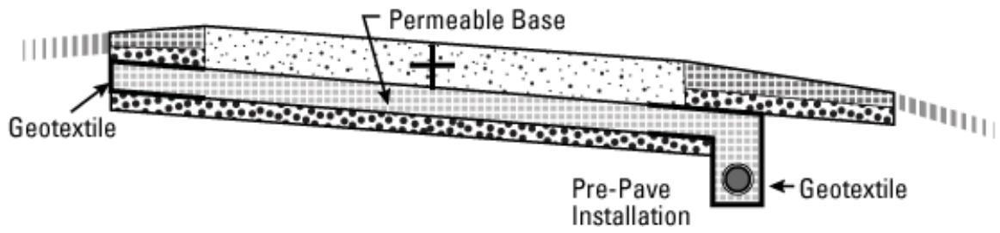
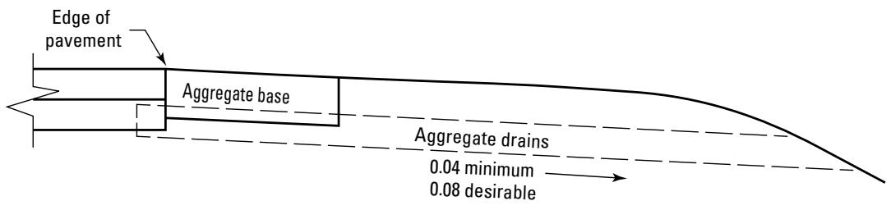

Drainage Management
Drainage management in pavement engineering is the systematic provision and assessment of pathways that collect, convey, and remove water from both surface and interior layers to prevent moisture-related distress. By removing excess water, the system maintains the load-carrying capacity of the structure and limits distresses such as pumping, faulting, cracking, or corner breaks [1]. The overarching aim is to keep pavement layers unsaturated for as short a time possible, thereby minimizing the period that underlying layers remain in a saturated condition [1]. Design involves estimating net inflow from various sources and sizing conveyance elements to accommodate design flow rates while incorporating filter media that allow water passage without clogging [1] [2]. Because pavement performance depends on continued functionality, regular inspection and maintenance are essential throughout the service life to ensure drainage elements remain clear and effective [1] [3].
Drainage Management systematically provides pathways to collect, convey, and remove water from pavement surfaces and interior layers, thereby preventing moisture accumulation that leads to structural damage. Subsurface Drainage intercepts groundwater before it saturates the base course, preserving load-bearing capacity. Surface Drainage channels runoff away from the pavement edge using crowns and side slopes, minimizing infiltration at critical boundaries. Edge Drains collect water that migrates laterally into the shoulder area, preventing saturation of the subgrade support layer. Internal Drainage removes trapped moisture from within the pavement structure itself, protecting layered integrity during freeze-thaw cycles.
Sources (3)
Sub-concepts (1)
Key findings
- Identified surface infiltration through lane-shoulder joints as the primary source of water affecting pavement performance, noting that sealing these joints can prevent the majority of rainwater from entering the system [1] [3].
- Found that incorporating open-graded, drainable layers provides rapid water removal but reduces support stiffness, a trade-off that can be mitigated by cement stabilization and protective geotextiles [3] [2].
- Reported that field performance of edge-drain retrofits is mixed, with high rates of inefficient operation and outlet blockage necessitating regular inspection and cleaning [1] [3].
- Found that isolated drainage solutions rarely achieve lasting performance improvements unless coordinated with necessary structural repairs such as slab stabilization or joint resealing [1] [3].
- Observed that higher permeabilities in unstabilized or overly porous stabilized bases caused quality and performance problems, establishing an optimal permeability range to balance drainage with structural stability [2].
- Demonstrated that drainage upgrades are only effective when distress is caught early, the base has low fines content, and cracking remains below specific thresholds; beyond these limits, upgrades do not extend service life [1].
- Showed that the effectiveness of drainage systems hinges on proper design parameters, flawless construction practices, and a disciplined maintenance regime including bi-annual inspections [3].
- Noted that pipe drains deliver higher flow rates but are more expensive than aggregate or geocomposite systems, highlighting trade-offs between hydraulic capacity and cost [3].
Integrated System Design and Structural Stability
Evidence: 3 reports (3 primary)
Integrated drainage design requires balancing the need for rapid water removal with the structural requirement to maintain sufficient base strength and stability under load [2]. The system functions by intercepting infiltrated moisture through subsurface pathways and conveying it away from the pavement structure to prevent prolonged saturation of load-bearing layers [1] [3]. Effective integration relies on properly sized conveyance elements and filter media that allow water passage while preventing particle migration that could compromise structural integrity or clog the system [1].
The following figure illustrates how to size drainage system elements based on estimated water inflow, base course capacity, and required discharge rates.

Schematic representation of water flow components in a pavement drainage system. [1]The figure illustrates the relationship between surface infiltration ($q_i$), base course acceptance capacity ($q_d$), and total outflow ($Q$) within a pavement structure consisting of a PCC slab, base layer, and edgedrain.
Research problem — Research must address how to design integrated drainage pathways that effectively prevent water infiltration while maintaining the structural integrity of pavement layers, as inadequate or obstructed systems lead to moisture accumulation and accelerated deterioration [3]. There is a need to resolve the trade-off between providing sufficient permeability for drainage and ensuring adequate in-place stability for construction equipment and long-term load-bearing capacity, particularly given historical challenges with overly permeable base layers [2]. Studies are required to determine how to properly identify, size, and maintain drainage solutions in older pavements where original systems were insufficient or compromised, thereby extending service life and preserving structural performance across the network [1].
The following figure illustrates a practical application of these principles through permeable interlocking concrete pavement.

Cross-section of a permeable interlocking concrete pavement system showing its layered construction. [2]The figure displays the vertical stratification of a permeable pavement structure, consisting of surface pavers with gravel joints, a bedding layer, two distinct open-graded granular base layers (small and large stone), and a compacted subgrade.
State of the art — Current practice treats pavement drainage as an integrated system that combines surface grading, subsurface drainable layers, and engineered longitudinal drains to rapidly remove infiltrating water while maintaining structural integrity [3]. Designers balance the high conveyance needs of permeable bases with structural stiffness by specifying stabilized open-graded aggregates and utilizing automated hydraulic analysis tools like DRIP software for standardized sizing [1] [2]. The field consensus emphasizes a systematic assessment-design-maintenance loop, where routine video inspections and cleaning are critical to preventing outlet clogging and ensuring the long-term reliability of both new installations and retrofits [1] [3].
The following figure illustrates examples of these automated hydraulic analysis tools in action.

Screenshots from DRIP drainage design calculations [1]The visible panels include inputs for roadway geometry, infiltration methods, permeable base properties, and edge drain pipe specifications to calculate flow rates.
Findings from the reports
- Reported that field performance of edgedrain retrofits is mixed, with more than 70% of systems not performing efficiently due to improper design, installation damage, or inadequate maintenance [1] [3].
- Found that incorporating open-graded, drainable layers provides rapid water removal but reduces support stiffness, a trade-off mitigated by cement stabilization and protective geotextiles [3].
- Measured that excess water infiltrating pavement joints is the root cause of joint deterioration, establishing rapid extraction as the primary goal of drainage management [3].
- Observed that the lack of a drainage system increases longitudinal and transverse cracking in concrete pavements, even when smoothness and faulting remain unaffected [1].
- Demonstrated that sealing and maintaining lane-shoulder joints prevents up to 85% of rainwater from entering the pavement system, identifying surface infiltration as the primary water source [1].
- Evaluated that base-layer drainage must balance hydraulic capacity with structural stability, noting that excessively high permeability in unstabilized or overly porous bases causes quality and performance problems [2].
- Found that edgedrain retrofits only extend service life when distress is caught early, the base has low fines content, and cracking remains below a specific threshold; beyond these limits, upgrades are ineffective [1].
- Showed that isolated drainage solutions rarely achieve lasting performance improvements without coordination with structural repairs such as slab stabilization or joint resealing [1].
Novelty & rigor — The approach introduces a distinctive methodology by treating the pavement structure and its water-removal pathways as a single, engineered system rather than separate components [3]. It integrates structural stabilization with controlled drainage pathways through the use of thin, cement-stabilized open-graded bases shielded by fine-size geotextiles to prevent clogging while preserving stiffness [3]. The method further innovates by folding drainage surveys directly into routine pavement distress inspections, enabling immediate data-driven design and targeted retrofits that shorten water travel distances [1].
The practical impact of integrating controlled drainage pathways into pavement design is illustrated in the following figure.
 Diagram illustrating the reduction of water travel distance through a granular base layer via the installation of a longitudinal edgedrain. [1]
Diagram illustrating the reduction of water travel distance through a granular base layer via the installation of a longitudinal edgedrain. [1]
The figure depicts a pavement structure where arrows indicate that water flow within the granular base is redirected into a perforated pipe, creating a new shortened flow path to an outlet.
Reported values
| Parameter | Value | Context | Source |
|---|---|---|---|
| backfill lift thickness | 6 in. | coarse sand backfill material | [1] |
| blocked drainage outlets | 65% | drainage outlets along concrete pavements | [1] |
| drainage functionality rating (good) | 50% | concrete sections | [1] |
| drainage functionality rating (good) | 55% | asphalt sections | [1] |
| fines content in base course | 15% | base course | [1] |
| inefficient edgedrain performance | 70% | edgedrains | [1] |
| maintenance-related problems | 75% | problems found during inspections | [1] |
| maximum aggregate size for backfill | 0.75 in. | backfill material | [1] |
| minimum pipe slope | 3% | edgedrain collector pipes | [1] |
| drainable layer thickness | 4 in. to 6 in. | open-graded aggregate layers (e.g., #57 or #67 with no sand) | [3] |
| hydraulic conductivity | 150 ft/day | highway pavements | [3] |
| obstruction rate | 65 percent% | drainage outlets on concrete pavements | [3] |
| outlet spacing | 250 ft | subsurface drainage system outlets | [3] |
| pipe diameter | 3 in. to 4 in. | subsurface drainage system pipes | [3] |
| permeability | 200 to 300 ft/day | stable draining base layer for pavement section | [2] |
3 more distinct values omitted here; the full span-verified set is in the quantities sidecar.
Across the reviewed reports, integrated drainage design requires balancing hydraulic efficiency with structural integrity, as high-permeability layers that facilitate rapid water removal often compromise support stiffness and stability. To mitigate this trade-off, effective system design employs cement stabilization or limits permeability to optimal ranges (e.g., 200–300 ft/day) while ensuring adequate trench depth and pipe slope to maintain in-place stability. The collective evidence indicates that drainage upgrades only extend service life when coordinated with structural repairs and strict construction controls, as isolated hydraulic improvements fail without addressing underlying base conditions and maintenance needs. [1] [3] [2]
The following figure illustrates a typical cross section of such a subsurface drainage system.

Typical cross section of subsurface drainage system [3]The figure displays a layered pavement structure featuring a permeable base and geotextile filter media. A pre-pave installation of a perforated pipe is shown at the bottom, designed to collect water from the layers above it.
Implications — Designers must balance the need for rapid water evacuation against structural stiffness by stabilizing porous drainage layers to prevent long-term support loss [3]. Practitioners should target specific permeability ranges that allow for effective drainage while maintaining sufficient base stability to support construction equipment and ensure durability [2]. Effective system performance requires integrating subsurface drainage with surface maintenance and structural repairs, as isolated interventions often fail without holistic execution [1] [3].
The following figure illustrates these principles as adapted from ODOT 2020.

Cross-section of a pavement edge showing the placement and slope requirements for aggregate base and drains. [1]The figure displays a cross-sectional view of a pavement structure, identifying the ‘Edge of pavement’, an ‘Aggregate base’ layer, and underlying ‘Aggregate drains’.
Limitations — Drainage interventions alone may offer limited benefit compared to other structural design features, and the effectiveness of retrofitted systems is often inconsistent due to variable installation quality [1]. Poor maintenance significantly compromises drainage functionality, with neglected systems potentially performing worse than having no drains at all [1]. Excessive permeability in drainage layers can undermine structural stability and support capacity, requiring a careful balance between water removal and load-bearing performance [2].
The following figure illustrates an example of such an aggregate drainage system.
 Examples of clogged edgedrain outlet pipes. [1]
Examples of clogged edgedrain outlet pipes. [1]
The figure displays three distinct views of concrete drainage structures, specifically headwalls and outlet pipes, situated within earthen embankments surrounded by vegetation. In the leftmost view, a vertical pipe is shown completely filled with rocks and debris, while the center image depicts an outlet blocked by mud and silt. The rightmost view shows a concrete structure where the interior is obstructed by organic matter and sediment accumulation. These images illustrate how outlet pipes can become obstructed, preventing water flow from the headwall.
Related concepts
In this hierarchy
- Child: Drainage Management
Related by shared evidence
- Aggregate Management — shares 3 reports
- Cement Chemistry — shares 3 reports
- Cementitious Materials — shares 3 reports
- Concrete Mixture Design — shares 3 reports
- Concrete Production — shares 3 reports
- Concrete Testing — shares 3 reports
- Cracking Mitigation — shares 3 reports
- Drainage Management — shares 3 reports
Similar topics
- Drainage Management
- Pavement Management
- Pavement Management
- Cracking Mitigation
- Paving Operations
- Aggregate Management
- Diamond Grinding
- Pavement Repair
References
- Concrete Pavement Preservation Guide (Third Edition) (2022)
- Integrated Materials and Construction Practices for Concrete Pavement: A STATE-OF-THE-PRACTICE MANUAL (2019)
- Guide to the Prevention and Restoration of Early Joint Deterioration inConcrete Pavements (2016)
Feedback on this page